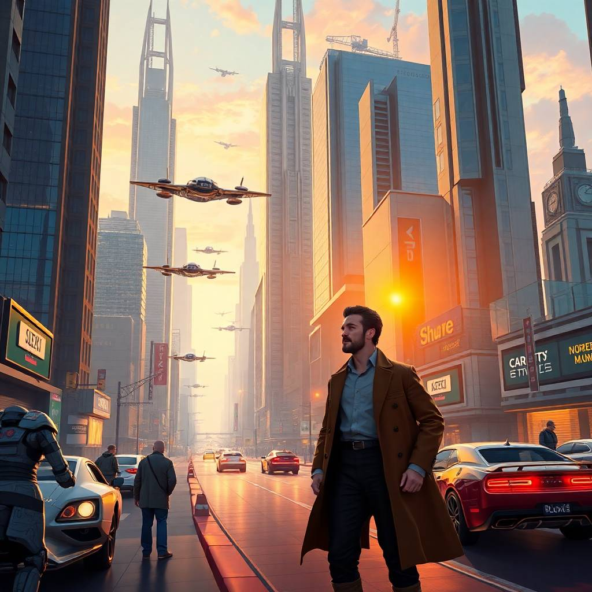

Част 3: Пътуване в бъдещето
След няколко месеца и неуспешни опити да възстанови своята машина, Алексей намери начин да я активира отново. Този път той реши да пътува в бъдещето. След натискането на бутона, той се озова в 2145 година – време, което беше толкова различно от всичко, което познаваше. Въпреки че вече беше свикнал с новите технологии, това бъдеще го порази. Улиците бяха изпълнени с високи небостъргачи, а автомобили, които летяха, пресичаха небето. Всичко изглеждаше като сцена от фантастичен филм. Технологиите в 2145 година бяха толкова напреднали, че болестите почти не съществуваха, а хората живееха двойно по-дълго. Но зад цялото това технологично чудо, Алексей усещаше празнотата. Хората, които срещаше, изглеждаха безлични, без истинска емоция и без истински контакт помежду си. Той беше открит от група учени, които веднага го заведоха в тяхната лаборатория. Професор Иванов го приветства с възторг: – Вие сте първият човек, който някога е пътувал във времето! – възкликна той. Алексей разказа своята история и научи, че експериментите му с машината на времето бяха станали легенда сред учените в бъдещето. Те го поканиха да се запознае с техните постижения и да изследва начините, по които светът е променен през вековете. В този нов свят, роботите асистенти, летящите коли и напълно автономни сгради бяха обичайни, но Алексей започна да забелязва нещо странно. Човешките взаимоотношения изглеждаха все по-лишени от истинска същност. Хората се свързваха чрез виртуални технологии, а истинският разговор между тях беше оскъден. Алексей осъзна, че въпреки напредъка на цивилизацията, човешката връзка и истинската комуникация започваха да изчезват. Един ден той зададе въпрос на професор Иванов: – Не се ли страхувате, че с толкова много технологии, може да загубите това, което ви прави хора? Професор Иванов се замисли и погледна Алексей в очите. – Може би, но е трудно да се върнем назад. Технологиите ни дават възможност да живеем по-дълго и по-здрави. Но какво наистина е важно? – отговори той. С това размишление в ума си, Алексей продължи своето пътуване, усещайки вътрешен конфликт между напредъка и човечността. Въпреки че беше поканен да остане и да се включи в научната работа на бъдещето, Алексей осъзна, че все още имаше толкова много за откритие. Машината на времето беше отвела него на толкова много места, но същевременно и на толкова много въпроси. Дали технологиите бяха единственият отговор на човешките нужди, или съществуваше нещо повече от това, което можеше да се види на повърхността? Неговото пътуване в бъдещето беше изпълнено с вълнение, но и с размисли за смисъла на живота. Щеше ли някога да намери отговори на тези въпроси? След известно време, Алексей отново седна в своята машина на времето и активира устройството. При последния поглед към бъдещето, той почувства смесица от възхищение и страх, но знаеше, че пътуванията му тепърва започваха.
